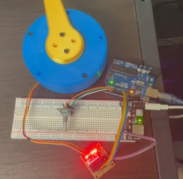
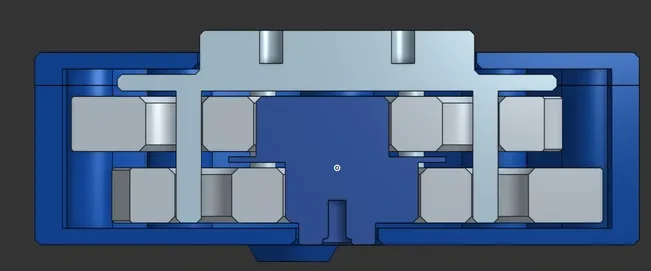

Personal project
Cycloidal drive study
A bearing-free, fully printed cycloidal reducer I built to understand the mechanism before using it in Axon V2.
- My role
- Solo
- Tools
- Onshape, Arduino, stepper driver, 3D printing
- 9:1
- reduction
- 0
- bearings


Why I built it
A lot of robots use cycloidal drives in their joints and I wanted to understand them properly before designing one into an arm. So I built one that's fully 3D printed, with no bearings at all.
How
- Read up on how cycloidal drives work and worked out the 9:1 geometry by hand.
- Modelled it in Onshape for printing.
- Drove it with a stepper motor, an Arduino and a stepper driver.


Results
It ran at 9:1 as designed, and it showed me several things to fix. Those fixes went straight into the Axon V2 shoulder and elbow gearboxes.